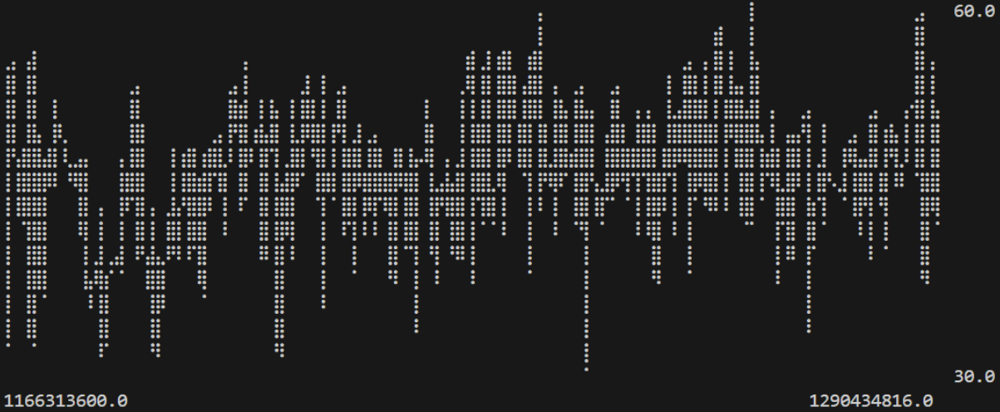
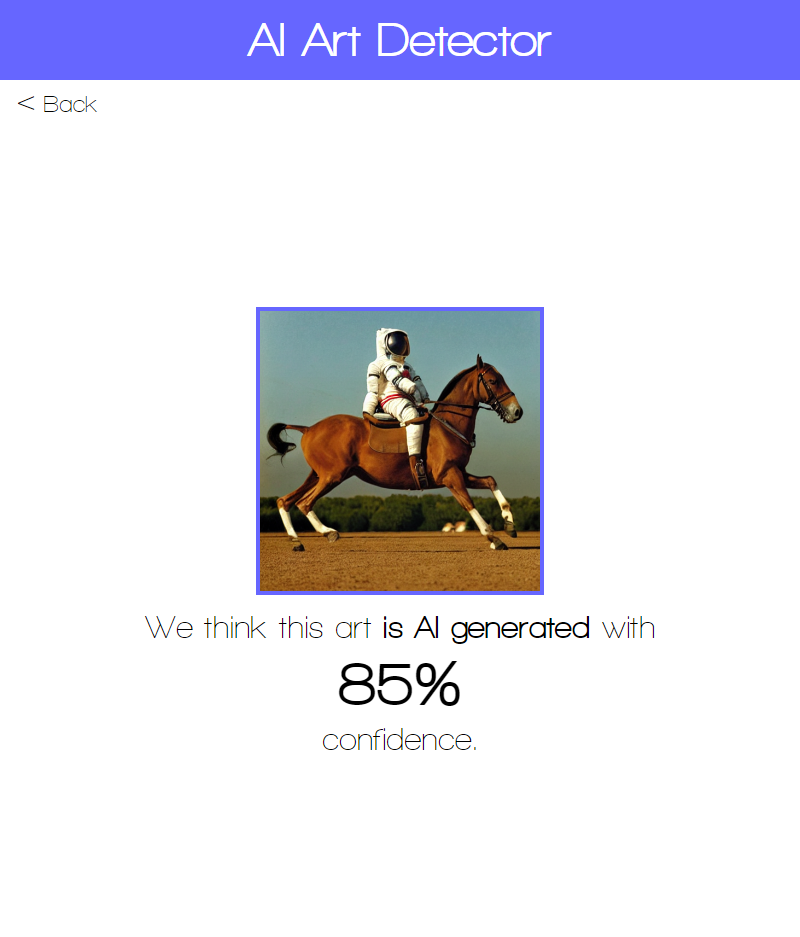
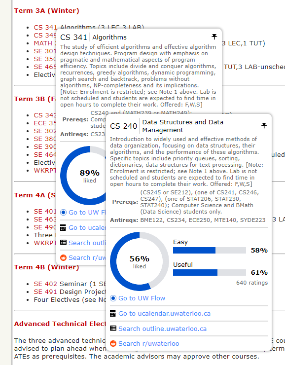
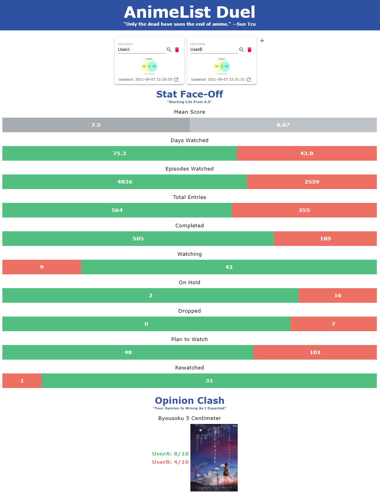

Projects
TachyonDB
Rust
TachyonDB is a lightweight serverless time series database written in Rust.
I am currently working on this project on a team of five as my fourth-year design project.
Similarly to SQLite and unlike most time series databases, TachyonDB does not run as its own process and is instead directly imported into user applications as a library.
However, unlike SQLite, TachyonDB is not a relational database and is instead optimized for storing time series data (numerical metrics over time).

AI Art Detector
Angular, Django, PyTorch, Nginx, Docker, AWS
AI Art Detector is a web app that lets users upload images and determines if they are AI-generated using machine learning.
The frontend single-page application is built using Angular.
The backend is built using Django and is powered by a CNN binary image classifier built using PyTorch.
The web app is deployed using Nginx, Docker and AWS (RDS, EC2, ECR, S3, CloudFront), though it's offline right now because AWS is expensive.
The model performed reasonably well on the test data with a precision of 0.88 and a recall of 0.94.
However, the model struggled to generalize during training and suffered from overfitting, most likely due to the lack of tuning and data.


UWLinker
HTML, CSS, JS
UWLinker is a Chrome extension that adds tooltips linking various University of Waterloo sites and third-party sites together.
So far, only course codes have tooltips, but I plan to add more types in the future.


AnimeList Duel
React, Spring Boot, MongoDB
AnimeList Duel is a website that compares MyAnimeList users.
The frontend uses React, TypeScript, SASS and Material UI, and the backend uses Spring Boot and MongoDB.
The backend scrapes MyAnimeList pages and extracts the data for users using regular expressions.
The results are stored using MongoDB for a period of time so the same data is not scraped repeatedly.

CamWow!
Python, OpenCV, Selenium, Raspberry Pi
What if you could set up automated tasks for your computer based on hand gestures?
'CamWow!' was a first-year school project made by a team of five using Python.
A Raspberry Pi recognizes hand gestures, including various shapes and the number of fingers, and sends this data to a computer.
Based on what the computer gets, certain user-specified tasks are automatically run, such as opening computer files or opening links with optional login info.
I was responsible for establishing communications between the Pi and the computer, implementing the ability to customize and save tasks, and creating a GUI.
Other Projects
ASCII Art Converter
Python
Converts videos into ASCII art.
Uses Python with OpenCV, Pillow and MoviePy.
SoluteTaire
Java, libGDX
Chemistry-themed Solitaire clone.
Uses Java with libGDX.